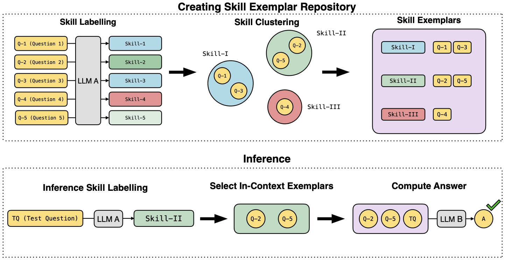
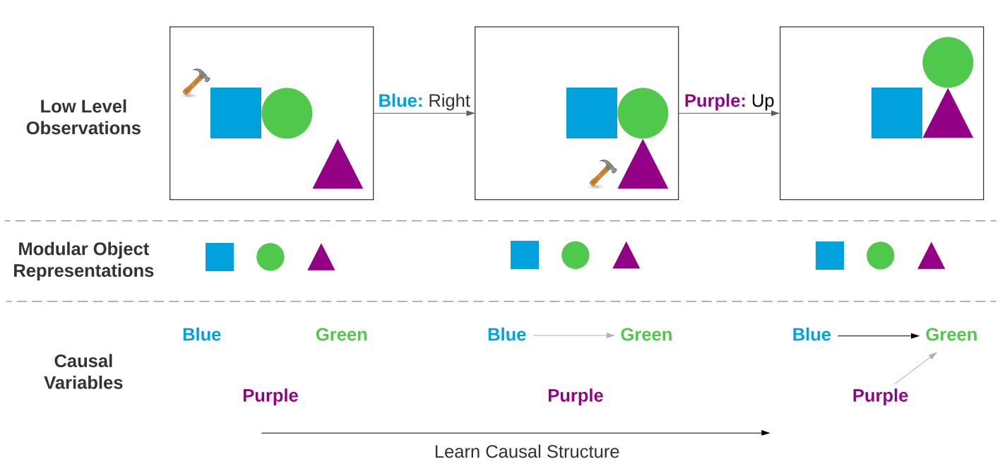

Aniket Didolkar
I am a Ph.D. student at Mila and The University of Montreal, advised by Prof. Yoshua Bengio, Dr. Anirudh Goyal, and Prof. Michael Mozer. I am also a visiting researcher at Meta, where I work with Dr. Nicolas Ballas.
My research is rooted in building cognitive science-inspired deep learning techniques. Broadly, I am interested in designing models that learn and reason like humans. Most recently, I have been exploring the metacognitive abilities of large language models (LLMs) in the context of mathematical problem solving (1). In earlier work, I developed hybrid architectures that integrate recurrent networks with transformers to effectively handle long-context modeling (2). Another major thread of my Ph.D. has focused on object-centric learning, where I have worked on building general-purpose visual representations that capture compositional structure and enable downstream reasoning (3, 4, 5).
Going forward, I am particularly interested in:
- Equipping LLMs with good thinking frameworks: While reinforcement learning has dramatically improved LLM reasoning, there remains a gap in how these models acquire and reuse knowledge. I am excited by the possibility of enabling LLMs to convert past reasoning traces into procedural habits, and to adopt structured thinking frameworks that maximize the utility of their context window.
- Multi-agent collaboration: Much of human progress comes from collaboration. To use LLMs to unlock progress on challenging scientific endeavors it would be crucial to develop frameworks which allow various LLM agents to collaborate with each other in a scalable manner as opposed to one LLM thinking for an extremely long time.
Prior to my current role, I gained valuable research experience across academia and industry through several internships. I was a research intern at Valence Labs, where I worked with Dr. Jason Hartford on experimental design strategies for estimating the effects of gene knockouts in cells. Before that, I interned at Microsoft Research NYC with Dr. Alex Lamb on reinforcement learning. Prior to starting my Ph.D., I spent a year at Mila working with Dr. Anirudh Goyal and Prof. Yoshua Bengio on cognitive science-inspired deep learning projects, now published at NeurIPS 2021 and ICLR 2022. During my undergraduate studies, I was a Google Summer of Code student developer with Preferred Networks, where I contributed CUDA-optimized implementations of RNNs, GRUs, and LSTMs to the ChainerX deep learning library. I also collaborated with Prof. Rajiv Ratn Shah at IIIT Delhi on applied NLP projects, and with Prof. Aditya Gopalan at IISc Bangalore on time-series forecasting models for urban pollution.
Recent News
- Sep 2025: Excited to release our new paper on LLM reasoning, specifically a pipeline to enable efficient reasoning in thinking LLMs.
- Mar 2025: Paper titled CTRL-O: Language-Controllable Object-Centric Visual Representation Learning accepted at CVPR 2025.
- Jan 2025: Paper titled On the Transfer of Object-Centric Representation Learning accepted at ICLR 2025.
- Sep 2024: Paper titled Metacognitive Capabilities of LLMs: An Exploration in Mathematical Problem Solving accepted at NeurIPS 2024.
- Sep 2024: I am excited to join Meta as a research intern working with Dr. Nicolas Ballas.
- July 2025: New preprint out on general-purpose object-centric representation learning.
- May 2024: New preprint out on exploring the Metacognitive capabilities of LLMs.
- Jan 2024: Paper titled Cycle Consistency Driven Object Discovery accepted at ICLR 2024.
- Dec 2023: Awarded the Unique Excellence Scholarship worth $15000 in support of my Ph.D. at Mila.
- June 2023: Started as a machine learning intern at Recursion Pharmaceuticals/Valence Labs advised by Dr. Jason Hartford.
- May 2023: Started Ph.D. at Mila and The University of Montreal advised by Prof. Yoshua Bengio and Dr. Anirudh Goyal.
- Sep 2022: Our work Temporal Latent Bottleneck: Synthesis of Fast and Slow Processing Mechanisms in Sequence Learning has been accepted to NeurIPS 2022!
- Aug 2022: Joined Microsoft Research-NYC as a research intern!
- April 2022: Awarded a scholarship worth $1500 by The University of Alberta and The Alberta Machine Intelligence Institute to visit Edmonton to attend the Amii AI week.
- April 2022: Awarded a scholarship worth $4000 by The University of Montreal and The Quebec Ministry of Higher Education.
- Jan 2022: Our work Coordination Among Neural Modules Through a Shared Global Workspace has been accepted for Oral presentation at ICLR 2022.
- Oct 2021: Our work Systematic Evaluation of Causal Discovery in Visual Model-Based RL has been accepted at NeurIPS Dataset and Benchmark Track 2021.
- Sep 2021: Our work Neural Production Systems has been accepted at NeurIPS 2021.
- Aug 2021: Joined as a Research Master's Student at MILA
- Feb 2021: Served in the program committee for ACL-IJCNLP 2021.
- Oct 2020: Paper mixup for NLP accepted at COLING 2020.
- Aug 2020: Joined as a Research Intern at MILA.
- July 2020: Paper mixup for speech accepted at Interspeech 2020.
- Jan 2020: Started as Research Intern at IISC Bangalore.
- May 2019: Paper on arabic-hate speech profiling accepted at ACL-SRW 2019.
- May 2019: Joined as an intern at Ubisoft India Studios.
- May 2019: Accepted into Google Summer of Code 2019.
- Apr 2019: Joined as a research intern at MIDAS Lab, IIIT Delhi.
- Apr 2019: My paper for the ICLR Reproducibility Challenge 2019 was one of the 4 papers to be accepted to appear in the Journal of ReScience.
Selected Publications (* = equal contribution)
|
|
Aniket Didolkar, Nicolas Ballas, Sanjeev Arora, Anirudh Goyal Preprint Paper A pipeline to convert recurring reasoning patterns into concise behaviors for improved and efficient LLM reasoning. |
|

|
Aniket Didolkar, Anirudh Goyal, Nan Rosemary Ke, Siyuan Guo, Michal Valko, Timothy Lillicrap, Danilo Rezende, Yoshua Bengio, Michael Mozer, Sanjeev Arora NeurIPS 2024 Paper Probing the metacognitive capabilities of LLMs to improve mathematical problem solving. |
|
|
Aniket Didolkar*, Andrii Zadaianchuk*, Rabiul Awal*, Maximilian Seitzer, Efstratios Gavves, Aishwarya Agrawal CVPR 2025 Paper / Project Page / Code User-controllable visual representation learning. |
|
|
Aniket Didolkar*, Andrii Zadaianchuk, Anirudh Goyal, Michael Curtis Mozer, Yoshua Bengio, Georg Martius, Maximilian Seitzer* ICLR 2024 Paper / Code / Project Page Building object-centric models from a foundation model perspective. |
|
|
Aniket Didolkar, Anirudh Goyal, Yoshua Bengio ICLR 2024 Paper Unsupervised Object-Discovery via two cycle-consistency objectives. |

|
Aniket Didolkar, Kshitij Gupta, Anirudh Goyal, Alex Lamb, Nan Rosemary Ke, Yoshua Bengio NeurIPS, 2022 Paper / slides Merging transformers with recurrent networks to effectively handle long-context tasks. |
|
|
Alex Lamb, Riashat Islam, Yonathan Efroni, Aniket Didolkar, Dipendra Misra, Dylan Foster, Lekan Molu, Rajan Chari, Akshay Krishnamurthy, John Langford, TMLR 2023 Paper Algorithm for discovery of the minimal controllable latent state that has all the information for controlling an agent while learning to discard all other irrelevant information. |

|
Anirudh Goyal, Aniket Didolkar, Alex Lamb, Kartikeya Badola, Nan Rosemary Ke, Nasim Rahaman, Jonathan Binas, Charles Blundell, Michael Mozer, Yoshua Bengio ICLR, 2022 (Oral Presentation - top 5% of accepted paper) Paper Facilitating communication between modules using a limited-capacity bottleneck. |

|
Aniket Didolkar*, Anirudh Goyal*, Nan Rosemary Ke, Charles Blundell, Philippe Beaudoin, Nicolas Heess, Michael Mozer, Yoshua Bengio NeurIPS, 2021 Paper World models via sparsely communicating recurrent modules. |
|

|
Nan Rosemary Ke*, Aniket Didolkar*, Sarthak Mittal, Anirudh Goyal, Guillaume Lajoie, Stefan Bauer, Danilo Rezende, Yoshua Bengio, Michael Mozer, Christopher Pal NeurIPS Dataset and Benchmark Track, 2021 Paper / Code A new and highly-flexible benchmark for evaluation of causal discovery in model-based RL. |

|
Amit Jindal, Aniket Didolkar, Arijit Ghosh Chowdhury, Ramit Sawhney, Rajiv Ratn Shah, Di Jin Coling, 2020 Paper Proposed a new formulation of mixup for NLP. |

|
Amit Jindal, Narayanan Elavathur, Ranganatha, Aniket Didolkar, Arijit Ghosh Chowdhury, Ramit Sawhney, Rajiv Ratn Shah, Di Jin Interspeech, 2020 Paper Data augmentation using mixup for speech. |